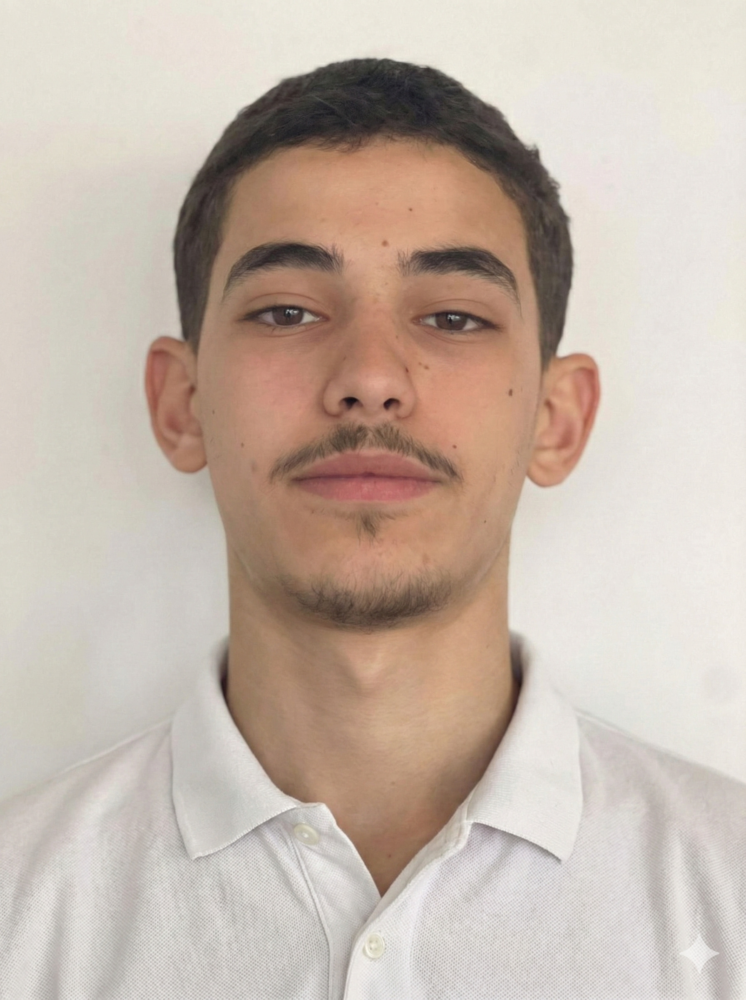

Étudiant en 1ère année de BUT R&T à l’IUT d’Ifs, j'allie la rigueur technique de ma formation à l'autonomie acquise en tant que graphiste freelance. Passionné par l'informatique et la création, je maîtrise déjà les bases du déploiement réseau, de l'administration Linux et de la conception web. Curieux et dynamique, je mobilise mes compétences pour apprendre à sécuriser les systèmes d'information tout en restant à l'écoute des besoins des utilisateurs.
En arrivant en BUT R&T, j'avais déjà quelques bases en HTML/CSS et en graphisme, mais le réseau et la cybersécurité étaient des domaines nouveaux pour moi. Au fil du semestre, j'ai appris à configurer un réseau complet (VLANs, routage, SSH), à manipuler du matériel de mesure (oscilloscope, photomètre) et à coder des scripts Python qui interrogent des APIs web. Le plus gros changement, c'est que je suis passé de la théorie à la pratique : avant, les réseaux restaient abstraits ; maintenant je sais monter une infrastructure de A à Z. La SAÉ 1.01 m'a aussi confirmé mon envie de m'orienter vers la cybersécurité.
À court terme, mon objectif est d'approfondir mes compétences techniques en informatique et en administration réseaux, tout en consolidant activement mes bases en développement et programmation. À moyen terme, je souhaite vivement m'orienter vers le parcours Cybersécurité dès ma deuxième année de BUT, un domaine passionnant dans lequel j'ambitionne d'évoluer professionnellement.